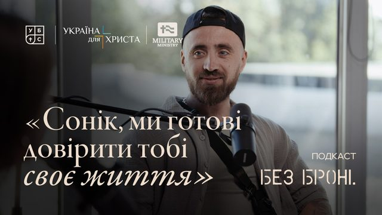

«Війна для мене ніколи не закінчиться»
Гість: Артур «Сонік» СафоновАртур — доброволець, колишній командир штурмового відділення ДУК «Правий сектор», дитячий тренер із футболу, батько трьох дітей. До повномасштабного вторгнення займався спортивним служінням місії «Україна для Христа».
Читати розмову →